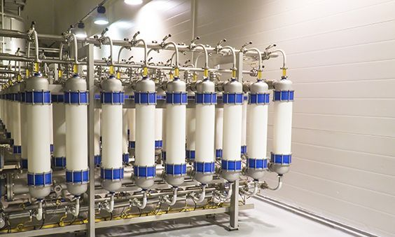
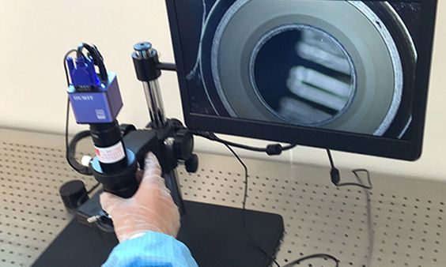
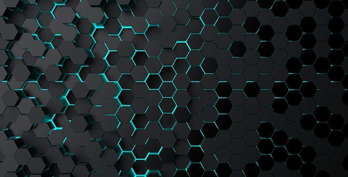

✓ Research team of 20+ PhDs/Masters
✓ Leaders from 4 top domestic science and engineering universities
✓ Deep integration of industry, academia & research
Technology research & development
- Technology and related materials for process media separation and purification
- Process media recovery, purification and recycling technology
- Material composition and impurity trace analysis and detection technology
- Chemical fluid system and process design technology
- Hazardous process media and system safety assurance technology
- Energy saving and emission reduction technology
Technical service platform construction
The technical service platform of the Industrial Technology Research Institute provides testing, analysis and product certification services for partners and other business sectors in our company.
- High-purity system component inspection platform
- Computer simulation platform
- Electronic control technology development platform
- Trace analysis detection platform
- Separation and purification experimental platform
- Adsorption material experimental platform
Six Core Technologies

High Purity Material Generation and Purification
- With in-depth research on chemical reactions, separation and purification mechanisms, the electronic materials team of Bosoc has achieved the synthesis of electronic materials through using engineering techniques to magnify experimental devices. Then, through catalytic adsorption, high-efficiency distillation, membrane separation and other purification means, Bosoc has mastered these core technologies to effectively remove harmful impurities in electronic materials. Through treatment technology for inner wall of gas cylinder , Bosoc is able to guarantee stable quality for high purity gas during storage and transportation, and satisfies the purity of 99.9999% or higher required by the semiconductor manufacturing industry.
- Using synthesis, separation and purification technologies, the purity of arsine and phosphine products produced by Bosoc could reach 99.9999% and above. The critical impurities content is superior than the relevant standards described in GB/T 26250-2010 National Standards People's Republic of China: Gas for Electronic Industry-Arsine and GB/T 14851-2009 National Standards People's Republic of China: Gas for Electronic Industry-Phosphine.

Process System Micro-contamination Control
- With in-depth research on chemical reactions, separation and purification mechanisms, the electronic materials team of Bosoc has achieved the synthesis of electronic materials through using engineering techniques to magnify experimental devices. Then, through catalytic adsorption, high-efficiency distillation, membrane separation and other purification means, Bosoc has mastered these core technologies to effectively remove harmful impurities in electronic materials. Through treatment technology for inner wall of gas cylinder , Bosoc is able to guarantee stable quality for high purity gas during storage and transportation, and satisfies the purity of 99.9999% or higher required by the semiconductor manufacturing industry.
- Using synthesis, separation and purification technologies, the purity of arsine and phosphine products produced by Bosoc could reach 99.9999% and above. The critical impurities content is superior than the relevant standards described in GB/T 26250-2010 National Standards People's Republic of China: Gas for Electronic Industry-Arsine and GB/T 14851-2009 National Standards People's Republic of China: Gas for Electronic Industry-Phosphine.
Material Recovery & Recycling
- The pan-semiconductor industry has very low utilization rate of process media, and the utilization rate of some process material is less than 5%, or even does not participate in chemical reactions at all. Moreover, most process media should be avoided to directly discharge into the atmosphere or municipal sewage systems while industrial tail gas, waste liquid and wastewater should be effectively treated. Bosoc has developed waste recycling technology, using various engineering methods and managements to recover useful substances and energy from wastes. By recycling high-valued components in waste items and reusing upon secondary purification, it can not only reduce raw material consumption, but also ensure production safety, and avoid environmental pollution.
- Bosoc has independently developed a helium recovery and recycling system. By studying the physicochemical properties of helium and related components, the system applies a combination of purification methods such as filtration, adsorption, and membrane separation to recycle helium, satisfying customers in terms of recovery rate and purity. This technology not only helps customers reduce their cost of purchasing raw materials, but also reduces the dependence on foreign suppliers.
Flow System Design and Simulation
- Bosoc adopts process simulation technology, through engineering design and software programming, to accurately and dynamically calculate temperature, pressure, flow, concentration, heat transfer and other parameters of the high-purity electronic gases and chemicals delivered. By simulating actual operating parameters, the software can guide piping system design, parts selection, energy consumption improvement, etc.
- Combining sophisticated process application database and accumulated project experience, and modifying the calculation process through realistic practice, the accuracy of simulation is improved, enabling to deal with complex fluid system design. Bosoc combines fluid subject with engineering practice to optimize the design of critical components and equipment in the system. Thus, the company is able to support stable supply of gases and chemicals to match specific needs of customers.
Material Analysis and Trace Impurities Detection
- For the harmful impurities in specialty gases and chemicals, Bosoc RND team has developed an accurate and reliable method to analyze trace impurities by using self-developed chromatographic column packing formula and packing process to design the corresponding feed and purge procedures. With a view to ensure the production of high purity electronics materials, Bosoc is equipped with a high-precision detector to detect and analyze harmful impurities of electronics specialty gas such as trace moisture, oxygen, particles, and hydrocarbons.
- Bosoc has established a complete set of analysis and detection methods, and has applied these technologies to the high-purity specialty gas business. In order to ensure accurate and reliable results and also guarantee production of high purity specialty gases, analyzing and testing laboratory built up by Bosoc in Hefei has established standard operating procedures in every link from high-purity sampling systems to precise analytical instruments.
Life Safety and Process Control
- Bosoc follows intrinsic safety design principles and evaluates the hazards and operability of gas and chemical systems based on the requirements of the 14 major elements of process safety. Through process hazard analysis, we identify and evaluate possible risks, and reflect the technically important points in the design plan and operating procedures. Bosoc has designed and built a software and hardware platform for gas and chemical system monitoring, helping customers achieve automated safety control and management of the material supply process.
- For equipment, Bosoc has accumulated process logics and experienced parameters in customer supply systems from various industries. We embed process safety interlocks in the PLC program to avoid human's wrong operations or process flow logic errors that will result harm to system's life and staff 's safety. For management, Bosoc achieves data recording and central monitoring for system operation through the collection of basic data such as process equipment and detectors. Furthermore, Bosoc provides customers with specific functions, such as status query, safety warning, maintenance prompts, and information traceability, to enhance life safety and process safety management.
Accelerator Program
Bosoc is introducing an "Accelerator Program" to start-up teams and businesses so that we can share our resources with the industry's best minds and innovators. If you and your team have developed new technologies or products, and you need strong support to push your products to the market, maybe we are your best partner.
To participants in the "Accelerator Program", we offer a range of professional services and assistance:
- Flexible financial support
- Effective sales and marketing support
- Professional lab and analytical platforms
- Tailored management systems and resources
- Administrative and property management assistance
We look forward to working with you. You and your team can focus all of your efforts on R&D and technical development, and leave everything else to us.
New Technology Development
Bosoc Nano Battery Materials
Bosoc has high electronic conductivity, which is conducive to the transfer of electrons, and this material has a pore structure, which provides large lithium storage space and fast lithium-ion transmission channels. Since there is a framework between Bosoc sheets, which is carbonized from organic carbon source, it can effectively alleviate the volume change, and further prevent the damage to the structure during the charge and discharge process. This material is entitled to excellent recycle performance and is the negative electrode of the new generation material of lithium-ion battery.

Nano Hydrogen-storage Materials
Nanomaterials have quantum size effect, small size effect and surface effect. After nanometerization, hydrogen-storage alloys have many new thermodynamic and kinetic characteristics, such as activation performance significantly improved, higher hydrogen diffusion coefficient and excellent kinetic properties of hydrogen absorption and desorption. Nano hydrogen-storage materials usually have better performance than ordinary hydrogen-storage materials in terms of storage capacity, cycle life and hydrogenation-dehydrogenation rate. The increase in specific surface area and number of atoms on surface change the properties of metal, which are not found in blocky materials. Due to its small size, hydrogen is more likely to diffuse into metal to form interstitial solid solutions, and adsorption phenomenon is also more notable at the surface.
Bio-separation and Purification
Bio-chemical products, normally obtained from microorganism fermentation, enzyme reaction or large-scale cultivation of animal and plant cells, are always aqueous solutions with low product concentration due to oxygen transfer limitation and cell size and product inhibition. It has complex components, such as giant molecule, small molecule, soluble, insoluble and chemical additives. These products are unstable, and easy to degrade chemically and microbiologically. Batch operation during the cultivation will also cause great biological variability. GenTech adopts the following separation and purification technologies to obtain biological products for pharmaceutical or food products from the above-mentioned fermentation, reaction or cultivation fluids.
- Cell recovery technology (solid-liquid separation): flocculation, centrifugation, filtration and micro-filtration.
- Cell crushing technology: grinding, high pressure homogenization, chemical crushing technology.
- Preliminary purification technology: adsorption, ion-exchange, precipitation (salting out, organic solvent precipitation, isoelectric point, precipitant), solvent extraction, two-phase extraction, supercritical extraction, reverse micelle extraction, membrane separation.
- High purification technology: chromatography, affinity, hydrophobicity, focusing, ion-exchange, crystallization and chromatographic separation.
- Final products processing: concentrating, sterilization and dehydrogenation, spray drying, flash drying, fluid bed drying, freeze drying.
We look forward to working with you. You and your team can focus all of your efforts on R&D and technical development, and leave everything else to us.